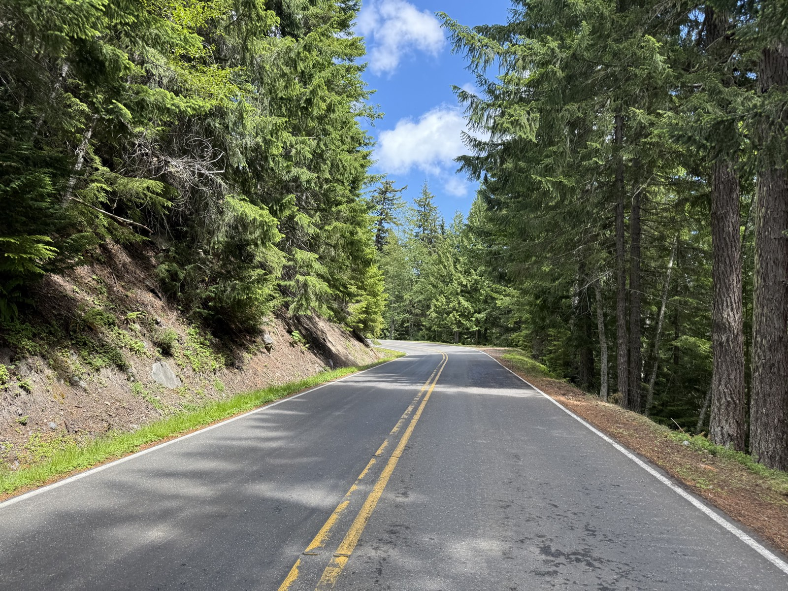
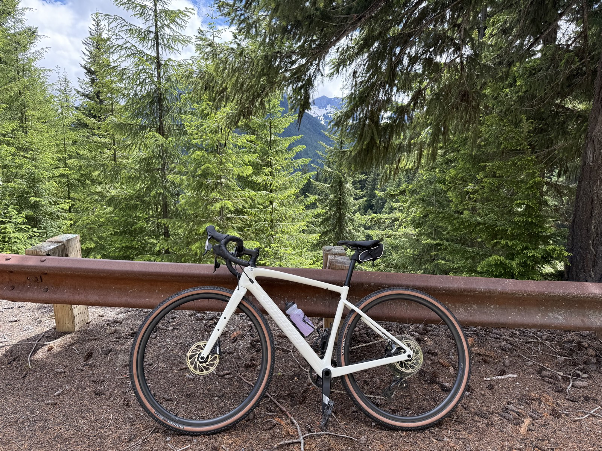
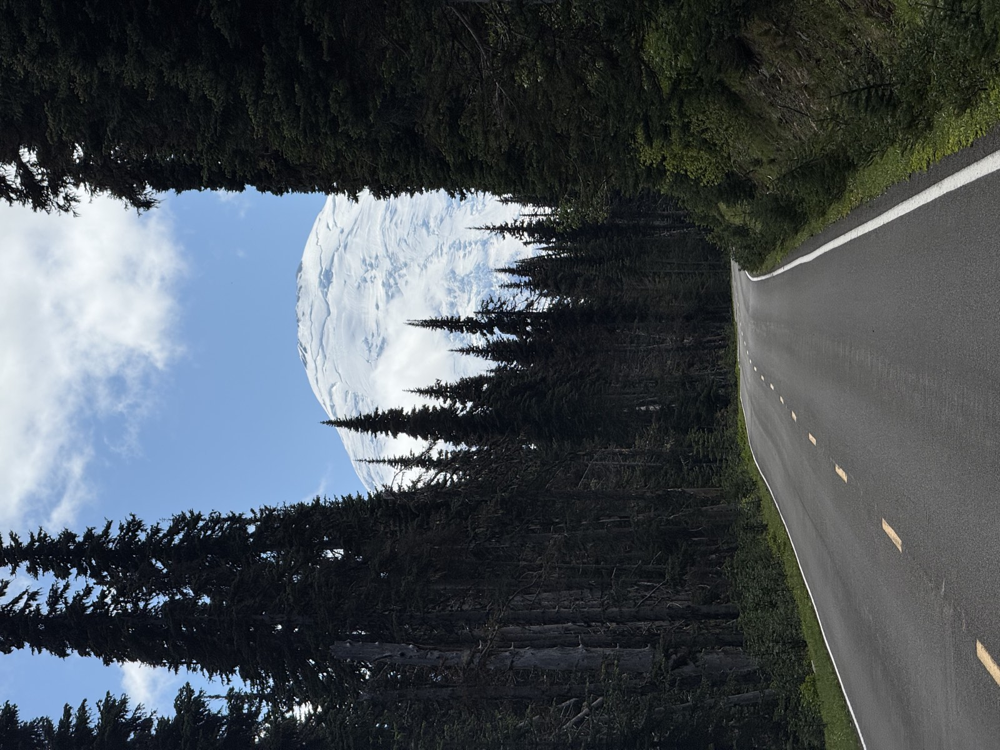
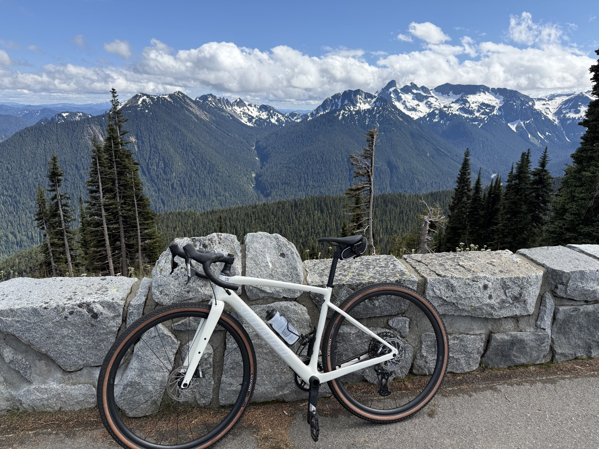
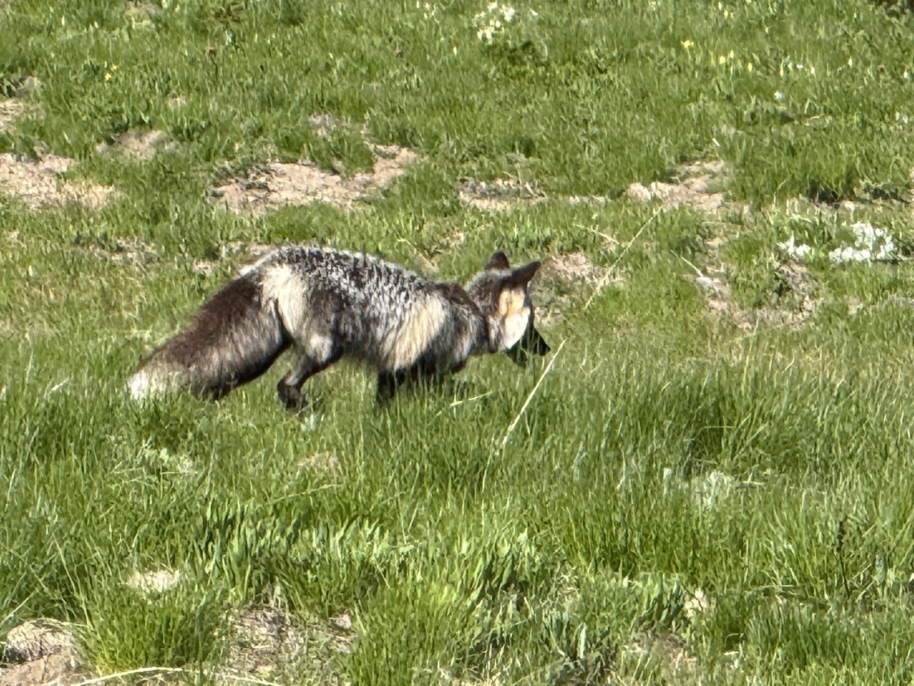
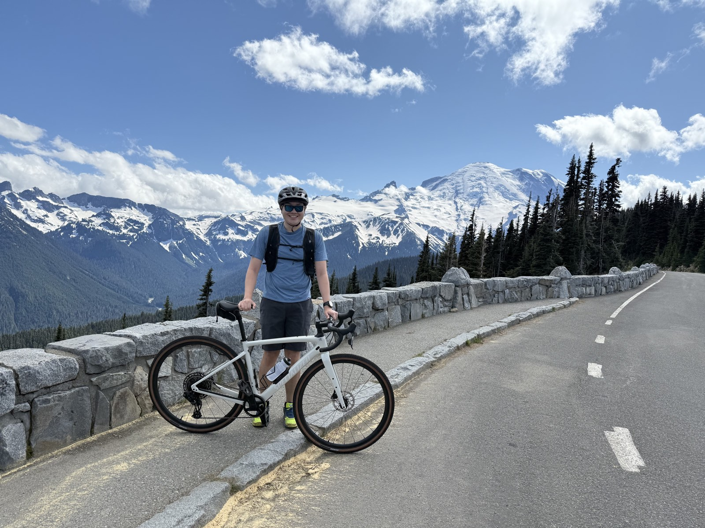
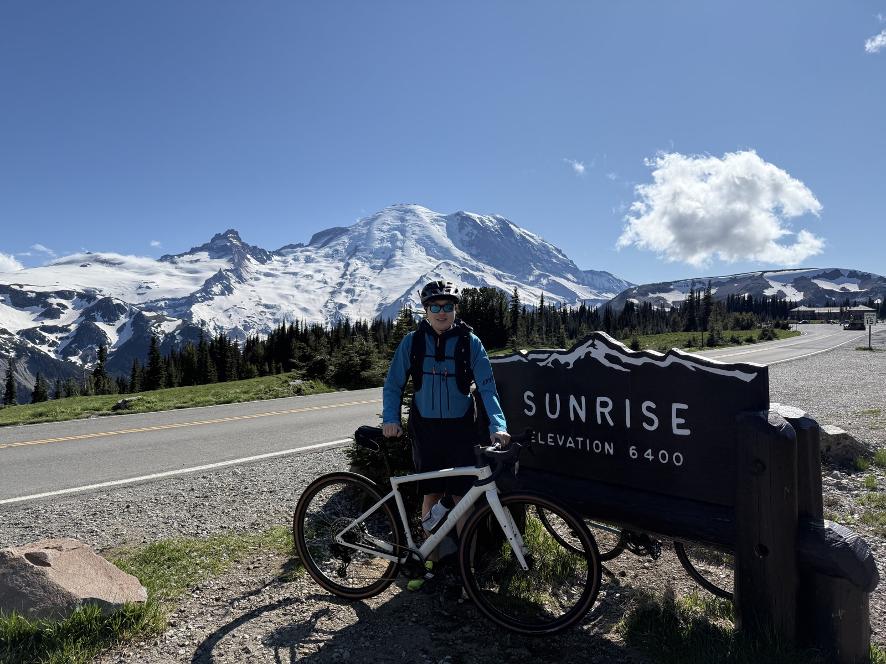

Few rides match the beauty and challenge of Sunrise Road in Mount Rainier National Park. The road typically opens to vehicles in early July, but time it just right and you can experience it car-free—just you, your bike, and the mountain. The 28-mile round-trip route packs in 3,083 feet of climbing. It’s a steady ascent, but every switchback rewards you with towering evergreens, snowcapped peaks, and the commanding presence of Rainier keeping you company all the way up.







